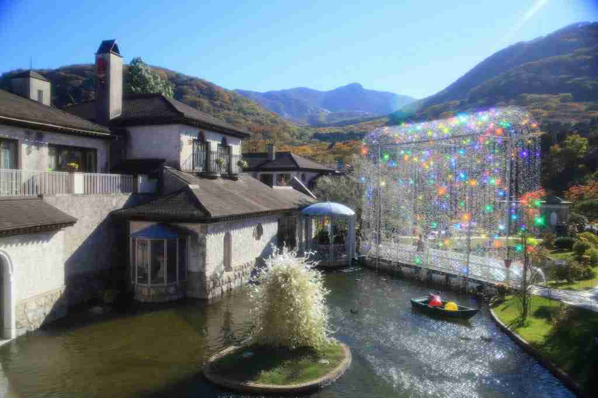

最重要的「行李策略」
為了讓8位成員移動舒適，且箱根山路不便拖行大行李，我們採取「行李分離術」：
1 大行李（黑貓宅急便）
在Day 1 羽田機場直接寄出，指定 2/15 (Day 3) 送達東京飯店。
每人2件行李額度，可以放心寄！
2 隨身輕裝（箱根用）
每人攜帶一個軟式旅行袋或登機箱，裝2晚衣物上包車去箱根。
FEB
13
抵達東京 & 直奔溫泉
松山(TSA) ➔ 羽田(HND) ➔ 箱根仙石原
13:00
抵達羽田機場 (JL96)
降落於羽田第三航廈 (T3)。領取行李後，直接在入境大廳尋找「黑貓宅急便」櫃台，將大行李寄往Day 3的東京飯店。
17:30 入住

Centurion Hakone Bettei
仙石原溫泉・客房半露天風呂
爸爸精選的飯店！最棒的是客房內附設半露天溫泉，長輩不用擔心大浴場地板濕滑，在房間就能安心享受好湯。全館僅少數客房，隱私性極佳。
入住 17:30 / 退房 11:00
+81 460-84-5122
1285-389 Sengokuhara, Hakone, Ashigarashimo District, Kanagawa 250-0631
一泊二食
免費WiFi
FEB
14
箱根藝術與湖景
玻璃之森 ➔ 蘆之湖 ➔ 大涌谷
10:00


FEB
15
移動日：富士山與東京
退房 ➔ 御殿場/小田原 ➔ 銀座
FEB
16
東京下町風情
淺草(人力車) ➔ 鰻魚飯 ➔ 銀座
10:00
FEB
17
最後採買 & 返家
百貨地下街 ➔ 羽田機場 ➔ 溫暖的家
15:30
前往羽田機場 (JL99)
JL99 回程航班
18:10 羽田(HND) T3 起飛 21:00 松山(TSA) T1 抵達
請於 15:30-16:00 抵達機場辦理登機 (托運額度每人2件)。